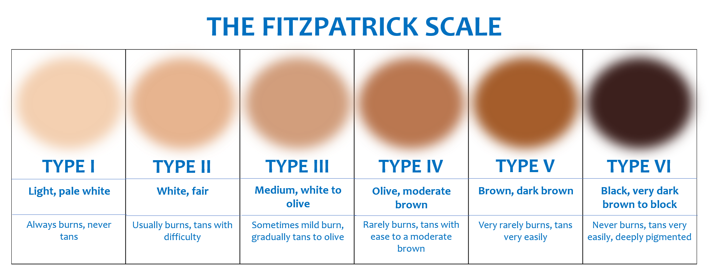

We all love the sun - but so does cancer.
The Health Physics Society defines ultraviolet (UV) light, or UV radiation, as the 100-400 nm portion of the electromagnetic spectrum, between visible light and x-rays. The primary source of UV radiation is the sun, but we can be exposed to UV radiation through other artificial means, such as tanning beds, halogen, or black lights. Sun exposure is beneficial and necessary for vitamin D synthesis, but too much exposure can be harmful to the skin and overall health.
Both UVA and UVB rays penetrate the skin and react with a chemical called melanin. Too much exposure to these rays will kill the top layer of cells. Normally, melanin protects the skin by absorbing the UV rays and converting them into heat energy. As the rays are absorbed, the skin darkens. Damage occurs, however, when the amount of UV absorbed by the skin cells exceeds melanin’s protection. The UV radiation damages the skin cells’ DNA, which triggers enzymes to try to repair the damage. The enzymes are not always successful in repairing the DNA, however, and mutations may occur, increasing the likelihood of cancer and other problems.
Different skin types, different protection.
When it comes to sunburn, moderately pigmented and darkly pigmented skin can stand more exposure to UV compared to those with fair skin. So the lighter your skin, the more easily you’ll burn. Remember that we are talking about your natural skin colour, and not your tan. There are six different skin types as determined per the Fitzpatrick scale (see image). At ADAM & AOKI, we care about your skin. That is why we created three different shirts, for the different skin types:
- Variant I for light skin types (I and II on the Fitzpatrick scale).
- Variant II for medium skin types (III and IV on the Fitzpatrick scale).
- Variant III for dark skin types (V and VI on the Fitzpatrick scale).